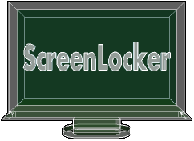

Writing by: Eddie Brüggemann Language: python 2.7.3 Writing start: 21/01/2014 Writing end: 02/02/2014 Contact: mrcyberfighter@gmail.com Credits: Thank's to my beloved mother, my family and to the doctors.
ScreenLocker: An fullscreen animation displaying screenlocker with optional
an password and music file playing.
ScreenLocker provide 4 fullscreen highly configurable animations:
Rollers: rollers who roll horizontaly or verticaly throught the screen available in:
3 different size:
- Little.
- Middle.
- big.
6 different colors (who can be set mutually) :
- Red.
- Green.
- Blue.
- Pink.
- Turkish.
- Yellow.
Bars: bars mesh whose colors can be set in the value you want, or in random colors setting what fill the screen with multicolors bars, available in:
2 different mode:
- Rectangles mode
- Squares mode.
Colors: An color gradient animation displayed in an circle or an square
available in :
3 different size:
- Little.
- Middle.
- big.
3 different colors:
- Red.
- Green.
- Blue.
Fullscreen circle or square mode.
Random size (creating flashing).
Random colors.
Balls: Jumping balls from the bottom to an random high available in:
3 different size:
- Little.
- Middle.
- big.
6 different colors (who can be set mutually) :
- Red.
- Green.
- Blue.
- Pink.
- Turkish.
- Yellow.
Circle or Circle with an halo mode.
For every animation you can set the speed and the background color.
Once locked in the fullscreen animation displaying mode you can switch
back if no password is set with the Return key.
Password: You can set an password needed to leave the fullscreen modus
only alphanumeric characters are supported.
You must enter your password and press Enter
to leave the animation, in case of error input press Enter and
retry.
A checkbox is provided for simply disable the password
functionnality or for setting the password protection active.
Background music: You can choose an *.mp3 or *.wav file to play in loop
during the animation displaying.
A checkbox is provided for simply disable the music
functionnality or disable it.
note: To reset the field od the filename to None you must open the file selector and press Quit instead of selecting a file. Configuration: Every single configuration change is effetiv for the next
launching of an animation and the preferences can be stored
permanently or reset to the default configuration.
GUI: The colors from the programm is configurable with 2 values:
background color: the main color.
Foreground color: the text item color.
The source files in /usr/share/ScreenLocker/Files/ are performed to be
reused for what case i have comment the lines who permit a single utlisation
of:
- The animations algorithms.
- The personnalised file selector.
Run the installation script called install.sh as root:
$ su root
password:
# . install.sh
ScreenLocker is now correctly installed and you can remove the extracted
folder.
If you want to remove ScreenLocker from your system.
Run the desintallation script: uninstall.sh as root:
$ su root
password:
# . uninstall.sh
ScreenLocker is now completely removed from you system.
ScreenLocker an animation displaying screenlocker
Copyright (C) 2014 Bruggemann Eddie
This file is part of ScreenLocker.
ScreenLocker is free software: you can redistribute it and/or modify
it under the terms of the GNU General Public License as published by
the Free Software Foundation, either version 3 of the License, or
(at your option) any later version.
ScreenLocker is distributed in the hope that it will be useful,
but WITHOUT ANY WARRANTY; without even the implied warranty of
MERCHANTABILITY or FITNESS FOR A PARTICULAR PURPOSE. See the
GNU General Public License for more details.
You should have received a copy of the GNU General Public License
along with ScreenLocker. If not, see <http://www.gnu.org/licenses/>